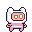
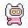
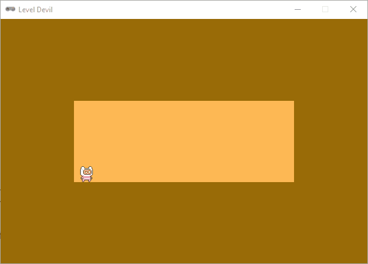

Player character#
In dit deel introduceren we het hoofdpersoontje van onze game. Het is een klein figuurtje dat door de speler wordt bestuurd en dat heelhuids door het level moet zien te komen zonder in een valkuil te vallen.
Sprites#
Voor onze player Actor gaan we verschillende sprites gebruiken. We willen het karakter namelijk animeren door een aantal sprites achter elkaar te tonen.


Download de zip folder (een gecomprimeerde map) met alle sprites en pak de inhoud uit in de images map van je project.

Voor het animeren van de player gebruiken we de pgzhelper module, gemaakt door A Posteriori. Deze module biedt handige functies voor het werken met sprites en animaties in Pygame Zero. Download het bestand pgzhelper.py en plaats het in de hoofdmap van je project (dus in dezelfde map als je level_devil.py bestand).
Als het goed is, beschik je nu over de volgende mappenstructuur in je project, waarbij de mappen in images gevuld zijn met de juiste sprites:
Bronvermelding
De sprites zijn afkomstig van itch.io uit de sprite packs Pixel Adventure en 2D Pixel Art Game - Spell/Magic FX. De pgzhelper module is zoals gezegd gemaakt door A Posteriori.
Idle#
Wanneer de speler stil staat, willen we de idle animatie tonen. Deze bestaat uit 11 frames. In de images/player/idle/ map vind je de sprites voor deze animatie. De sprites zijn genummerd van 00 tot en met 10.
Begin met het importeren van de pgzhelper module, helemaal bovenaan je codebestand:
1from pgzhelper import *
2
3# WINDOW SETTINGS
4WIDTH = 600
5HEIGHT = 400
6TITLE = 'Level Devil'
Dit is een andere manier van importeren dan we tot nu toe gewend zijn. Wellicht had je de code import pgzhelper verwacht. Voor dit project is from pgzhelper import * echter gemakkelijker, omdat we zo direct gebruik kunnen maken van de functies die deze module biedt, zonder dat we telkens pgzhelper. ervoor hoeven te zetten.
Verschillende manieren van importeren
Er zijn verschillende manieren om een module te importeren in Python. De keuze voor een bepaalde manier hangt af van de situatie en persoonlijke voorkeur. Op internet kun je hier meer informatie over vinden.
Meestal heeft de vorm import <modulenaam> de voorkeur, omdat het duidelijk maakt waar de functies vandaan komen, waardoor je minder kans op errors hebt. In dit geval kiezen we echter voor from <modulenaam> import *, omdat de pgzhelper module op deze manier gemakkelijker te gebruiken is in Pygame Zero code.
Lijst van sprites#
Voor de animatie is het nodig dat we een lijst maken van de sprites die bij de animatie horen. We maken een lijst genaamd player_img_idle en vullen deze met de namen van de 11 sprites voor de idle animatie. Je zou dit als volgt kunnen doen:
11room_rect = Rect((0, 0), (0, 0))
12trap_rects = []
13active_traps = set()
14
15player_img_idle = ['player/idle/player_idle_00',
16 'player/idle/player_idle_01',
17 'player/idle/player_idle_02',
18 'player/idle/player_idle_03',
19 'player/idle/player_idle_04',
20 'player/idle/player_idle_05',
21 'player/idle/player_idle_06',
22 'player/idle/player_idle_07',
23 'player/idle/player_idle_08',
24 'player/idle/player_idle_09',
25 'player/idle/player_idle_10']
Maar dit is nogal omslachtig. Gelukkig kunnen we dit ook veel korter schrijven met behulp van een list comprehension (zie ook de uitleg hier):
11room_rect = Rect((0, 0), (0, 0))
12trap_rects = []
13active_traps = set()
14
15player_img_idle = [f'player/idle/player_idle_{i:02d}' for i in range(11)]
Met deze ene regel code, maak je een lijst bestaande uit f-strings die eindigen op de nummers 00 tot en met 10. De {i:02d} syntax zorgt ervoor dat de getallen altijd uit twee cijfers bestaan, dus 0 wordt 00, 1 wordt 01, enzovoort. Hierdoor komen de namen van de sprites precies overeen met de strings in de lijst.
Je zou eventueel even een print statement kunnen toevoegen om te checken of de lijst correct is gevuld:
15player_img_idle = [f'player/idle/player_idle_{i:02d}' for i in range(11)]
16print(player_img_idle)
Je ziet dan in de shell dat de lijst de juiste namen bevat:
['player/idle/player_idle_00', 'player/idle/player_idle_01', 'player/idle/player_idle_02', 'player/idle/player_idle_03', 'player/idle/player_idle_04', 'player/idle/player_idle_05', 'player/idle/player_idle_06', 'player/idle/player_idle_07', 'player/idle/player_idle_08', 'player/idle/player_idle_09', 'player/idle/player_idle_10']
Actor animeren#
Nu we een lijst hebben met de namen van de sprites, kunnen we een Actor maken die deze sprites gebruikt voor de animatie. We maken een Actor genaamd player:
15player_img_idle = [f'player/idle/player_idle_{i:02d}' for i in range(11)]
16
17player = Actor(player_img_idle[0], anchor = ('center', 'bottom'))
18player.images = player_img_idle
19player.fps = 20
In regel 17 geven we aan de Actor twee argumenten mee. Het eerste argument is de naam van de sprite die als eerste getoond moet worden. In dit geval is dat de sprite met index 0 in de lijst, dus player_img_idle[0]. Het tweede argument geeft aan waar het ankerpunt van de Actor zich bevindt. In dit geval is dat het midden van de breedte en de onderkant van de hoogte van de sprite. Met het instellen van een ankerpunt zorg je ervoor dat de .pos, .x en .y eigenschappen van de Actor verwijzen naar dat ankerpunt. Normaal gesproken verwijzen deze eigenschappen naar het midden van de sprite, maar we hebben dat dus gewijzigd naar het midbottom punt van de sprite. Meer informatie over ankerpunten vind je in de Pygame Zero documentatie.
Voor de animatie van de Actor moeten we de lijst met sprites toewijzen aan de .images eigenschap van de Actor (regel 18) en de frames per seconde instellen met de .fps eigenschap (regel 19). Dit zijn eigenschappen die door de pgzhelper module zijn toegevoegd aan de Actor class.
De startpositie van de speler stellen we in in de setup_level() functie:
21def setup_level(level):
22 if level == 1:
23 room_rect.width = int(3/5 * WIDTH)
24 room_rect.height = int(1/3 * HEIGHT)
25 room_rect.center = (WIDTH / 2, HEIGHT / 2)
26 trap_rect = Rect((room_rect.left + 100, room_rect.bottom), (50, 0))
27 trap_rects.append(trap_rect)
28 trap_rect = Rect((room_rect.left + 200, room_rect.bottom), (50, 0))
29 trap_rects.append(trap_rect)
30 player.pos = (room_rect.left + 20, room_rect.bottom)
Omdat player.pos verwijst naar het midbottom punt van de sprite (dankzij het ankerpunt dat we hebben ingesteld), wordt de speler precies op de grond geplaatst, 20 pixels vanaf de linkerkant van de kamer.
Om de speler zichtbaar te maken, moeten we player.draw() aanroepen in de draw() functie:
38def draw():
39 screen.fill(COLOR_BACKGROUND)
40 screen.draw.filled_rect(room_rect, COLOR_ROOM)
41 for trap_rect in trap_rects:
42 screen.draw.filled_rect(trap_rect, COLOR_ROOM)
43 player.draw()
Tenslotte moeten we de animatie van de speler uitvoeren door player.animate() aan te roepen in de update() functie:
45def update():
46 player.animate()
47 for index, trap_rect in enumerate(trap_rects):
48 if index in active_traps:
49 if trap_rect.height < HEIGHT - room_rect.bottom:
50 trap_rect.height += 2
En voilà, de speler is nu zichtbaar en geanimeerd in het level!
